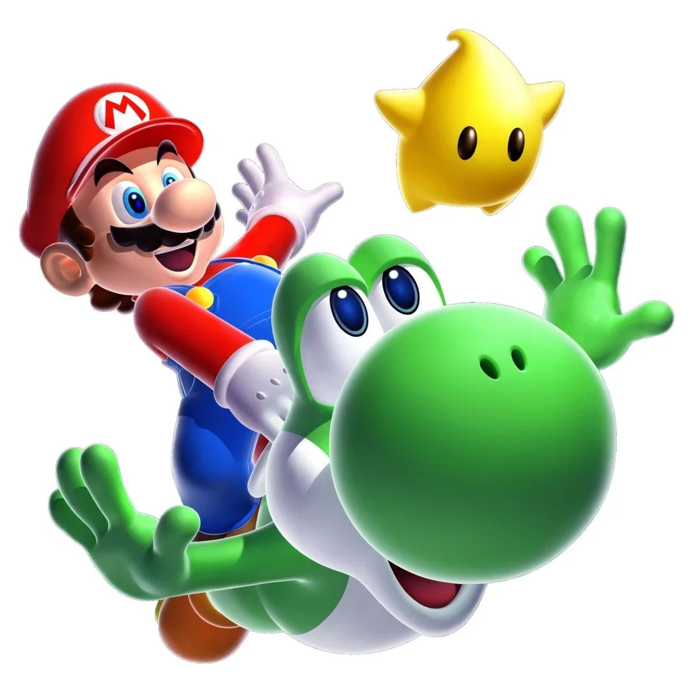
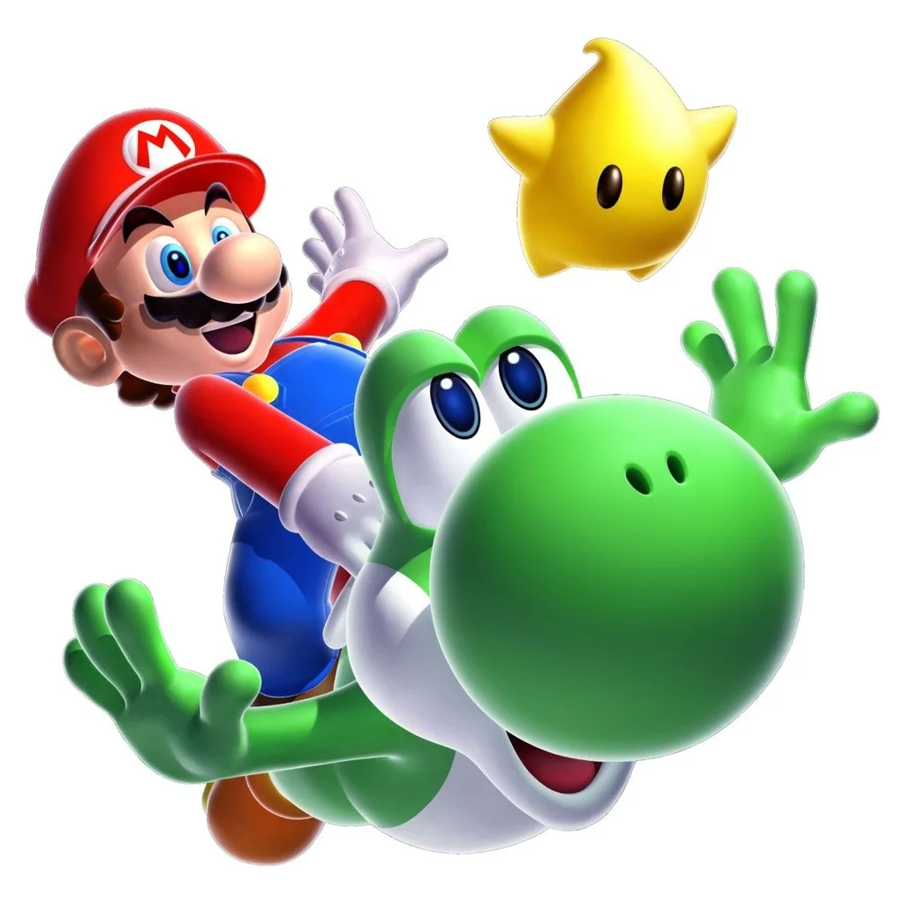

| Nome | Nascimento | Profisão |
|---|---|---|
| Super Mario Bros | 9 de julho de 1981 | Encanador |
A história de Super Mario é uma das mais icônicas da história dos videogames e remonta a décadas. Aqui está uma visão geral da história do Super Mario, desde o início até o meu último conhecimento em setembro de 2021:
Donkey Kong (1981): A primeira aparição de Mario, então conhecido como Jumpman, foi em "Donkey Kong". O objetivo era resgatar uma donzela em perigo chamada Pauline das garras de um gorila chamado Donkey Kong.
Kong Jr. (1982): Mario assumiu o papel de vilão, pois Donkey Kong Jr. tentou resgatar seu pai de Mario.
Mario Bros. (1983): Este jogo introduziu o irmão de Mario, Luigi, e ambos trabalham como encanadores, lutando contra criaturas em tubulações.
Super Mario Bros. (1985): Este jogo foi um grande sucesso e é frequentemente creditado por revitalizar a indústria de videogames. Mario e Luigi têm que resgatar a Princesa Peach do vilão Bowser no Mushroom Kingdom.
Super Mario Bros. 2 (1988): Este jogo apresentou uma jogabilidade diferente do original, com a capacidade de escolher entre quatro personagens jogáveis: Mario, Luigi, Toad e a Princesa Peach.
Super Mario Bros. 3 (1990): Considerado por muitos como um dos melhores jogos de todos os tempos, este jogo levou Mario a várias regiões do Mushroom Kingdom para salvar os reis dos Sete Mundos de Bowser.
Super Mario World (1990): Lançado com o Super Nintendo Entertainment System (SNES), este jogo introduziu o dinossauro Yoshi e levou Mario para Dinosaur Land para resgatar a Princesa Peach.
Super Mario 64 (1996): O primeiro jogo 3D da série, no qual Mario tem que coletar Estrelas de Poder para resgatar a Princesa Peach do castelo de Bowser.
 

Mario é retratado como um encanador corpulento que vive na terra fictícia do Reino do Cogumelo com Luigi, seu irmão gêmeo mais novo e mais alto. Na série de televisão e no filme, Mario e Luigi são originalmente de Brooklyn, Nova York.Pouco se sabe sobre a infância de Mario, embora a versão infantil de Mario, Baby Mario, tenha aparecido pela primeira vez em 1995 em Super Mario World 2: Yoshi's Island, e tenha aparecido frequentemente em jogos de esportes da Nintendo desde então. Baby Mario tem um papel importante junto com Baby Luigi em Mario & Luigi: Partners in Time e aparece em Yoshi's Island DS. Ele, junto com o adulto Mario, é dublado por Charles Martinet.
Ele veste uma camisa vermelha de mangas compridas, um macacão azul com botões amarelos, sapatos marrons, luvas brancas e um boné vermelho com um "M" vermelho impresso em um círculo branco. Em Donkey Kong, ele usava um macacão vermelho e uma camisa azul. Em Super Mario Bros., ele vestiu uma camisa marrom com macacão vermelho. Ele tem olhos azuis e, como Luigi, tem cabelos castanhos e bigode castanho-escuro ou preto. Essa diferença consistente de cor é atribuída a ser uma relíquia do design dos personagens para suas plataformas originais, em que certas características foram ativamente distinguidas enquanto outras tiveram que ser reduzidas devido a limitações técnicas.Em uma entrevista de 2005, Miyamoto afirmou que a idade física de Mario era de cerca de 24-25 anos.
1981
Mario estreou como "Jumpman" no jogo de arcade Donkey Kong em 9 de julho de 1981. Ele é mostrado como um carpinteiro e tem um macaco de estimação chamado Donkey Kong. O carpinteiro maltrata o macaco, que então foge para sequestrar a namorada de Jumpman, originalmente conhecida como 'a senhora' (mais tarde chamada de Pauline). O jogador deve assumir o papel de Jumpman e resgatar a garota.